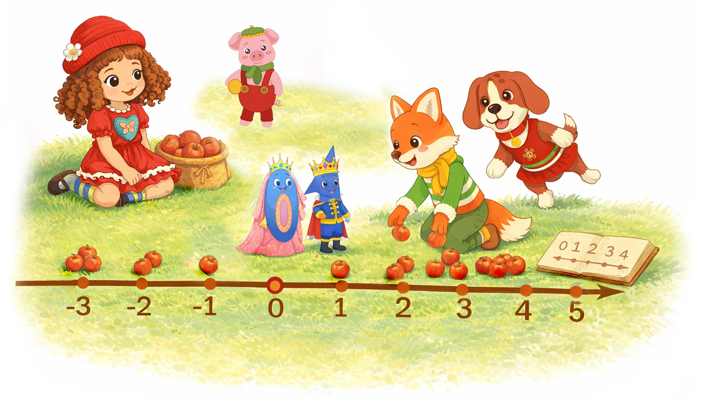
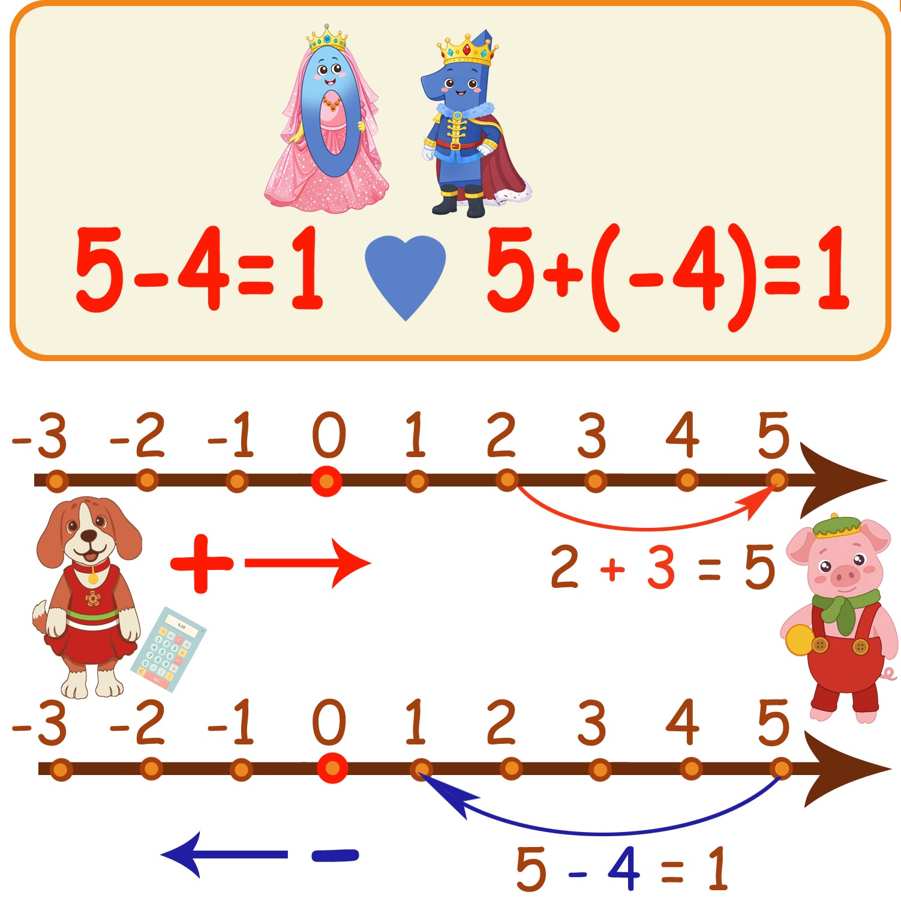
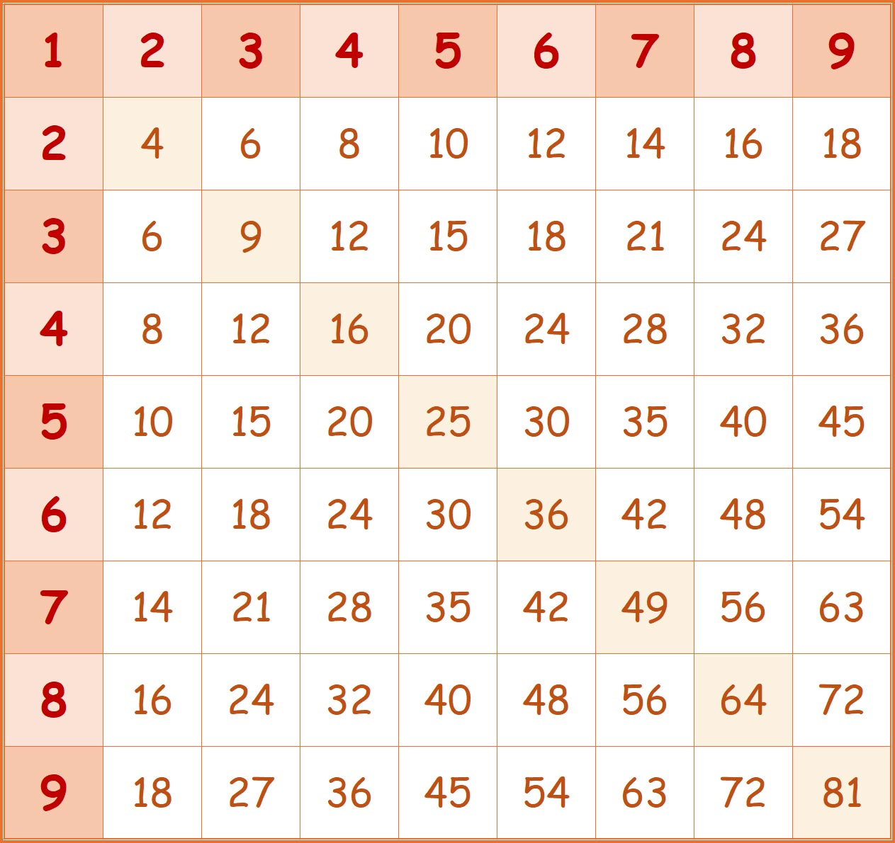
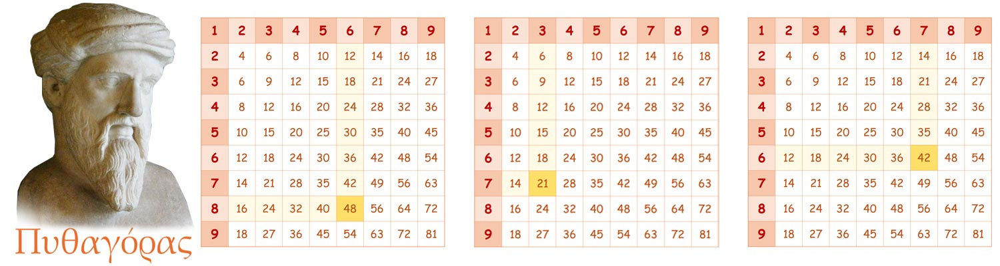

На Солнечной поляне было шумно и весело.
👧 Настенька сидела на траве, рядом прыгала 🐶 собачка Пиппа, а 🦊 лисенок Лиуми уже вовсю перекладывал яблоки в кучки. Рядом стояла большая корзина яблок 🍎🍎🍎. А на траве лежал блокнотик. На странице была нарисована числовая ось, и там — как всегда — стояли 👑 Принцесса Zero и 🤴 Принц One.
— Смотри! — радостно говорил Лиуми. — Если взять ещё яблоки, получится больше!
Он двигал яблоки туда-сюда и сиял от удовольствия.

Немного в стороне стоял 🐷 поросёнок Петя.
Он уже давно наблюдал. Сначала издалека. Потом подошёл чуть ближе.
Ему очень хотелось поиграть вместе. Но… он боялся. А вдруг ошибётся? А вдруг скажет что-то неправильно? А вдруг над ним снова будут смеяться?
Петя тяжело вздохнул… но всё-таки сделал шаг вперёд.
— Можно и мне… поиграть с вами в числа? — тихо сказал он.
Настенька сразу его заметила и тепло улыбнулась:
— Конечно можно, Петя! Мы будем очень рады, только нужно соблюдать правила игры.
Пиппа радостно тявкнула:
— Да-да! Вместе веселее!
Петя немного расслабился… но всё ещё стоял напряжённо.
— Только я не знаю правил… — осторожно сказал он.
Настенька кивнула:
— Ничего страшного! Мы тебе расскажем законы Царства Чисел.
Петя внимательно присел рядом. Очень аккуратно. Будто боялся что-нибудь случайно испортить.
Пиппа быстро подбежала к корзине.
— Смотри, Петя! — сказала она.
Она положила на траву 2 яблока 🍎🍎. Потом добавила ещё 3 яблока 🍎🍎🍎.
— Было два… прибавили ещё три… Теперь сколько?
🍎🍎 + 🍎🍎🍎
Петя осторожно начал считать:
— Один… два… три… четыре… пять… 🍎🍎🍎🍎🍎
Он посмотрел на Пиппу:
— Пять 🍎🍎🍎🍎🍎?
— Правильно! — радостно сказала Пиппа.
— 2 + 3 = 5. Это называется сложение!
Петя кивнул.
— Значит… мы просто считаем всё вместе?
— Именно! — сказала Настенька.
Петя облегчённо улыбнулся. Первое правило оказалось не страшным.
Вот 5 яблок 🍎🍎🍎🍎🍎
Пиппа убрала 4 яблока.
🍎🍎🍎🍎🍎 − 🍎🍎🍎🍎
— А теперь сколько стало?
— Одно 🍎, это совсем просто! — Петя облегчённо улыбнулся.
🍎🍎🍎🍎🍎 − 🍎🍎🍎🍎 = 🍎 или 5 − 4 = 1
Тут вмешался 🦊 Лиуми. Он хитро улыбнулся:
— А вот тут есть секрет!
Петя сразу напрягся:
— Какой?
Лиуми быстро написал: Чтобы вычесть, нужно сложить!
— Это как? — испуганно сказал Петя.
— Так не может быть! — залаяла Пиппа. — Сложение — это прибавлять, а вычитание — убавлять! Не запутывай нас!
— А ты возьми свой калькулятор и проверь: вот 5 + (−4) = 1.
— Вычитание — это тоже сложение! Только мы прибавляем противоположное отрицательное число.
Петя удивился:
— Сложение?.. Но тут минус…
Лиуми весь светился от восторга. Он любил всех удивлять. Он уверенно начертил линию, расставил на ней точки и сказал:
— Вот посмотри. Это числовая ось.
Вот число 3. Мы прибавляем к нему 2 — значит идём вправо на 2. Получаем 5.
А теперь прибавим (−4). Если число отрицательное — идём влево на 4. Получаем 1! Ты понял?

Петя задумался. Он долго смотрел на рисунок. Всё выглядело очень логично. А Пиппа проверяла всё на своём калькуляторе.
— Да, понял! — Петя оживился. — У меня игра настольная есть: там кубик и фишки. Выпадает красное число 3 — передвигаем фишку на три вправо. Выпадает синее число 4 — значит влево на 4. Так наперегонки можно играть.
— Давай ещё примерчик!
— 10 + (−4) = 6. Это то же самое, что 10 − 4 = 6! Мой калькулятор всё показывает правильно! Это же так необычно! Откуда ты узнал?
— Я сам догадался! — гордо сказал Лиуми.
— Какой ты умный! — восторженно сказал Петя.
— А вот и нет! Я знаю, откуда ты это узнал. Ты видел, как дядя Лёша отмеряет это своей рулеткой! — сказала Пиппа.
— Ну видел, но я же сам догадался! — возразил Лиуми.
Петя тихо выдохнул. Он всё хотел понять правильно. Очень хотел.
— А ещё есть правила? — спросил Петя осторожно.
— Да, есть, — сказала Настенька.
🍎 + 🍎 + 🍎 + 🍎 = 4 🍎 или 1 × 4 = 4
🍎🍎🍎🍎 + 🍎🍎🍎🍎 = 8 🍎 или 4 × 2 = 8
🍎🍎 + 🍎🍎 + 🍎🍎 = 6 🍎 или 2 × 3 = 6
Настенька аккуратно разложила яблоки:
🍎🍎🍎 + 🍎🍎🍎 + 🍎🍎🍎 + 🍎🍎🍎
— Сколько всего? — спросила она.
Петя начал считать.
Но тут Лиуми подпрыгнул:
— Подожди! Я покажу быстрее!
— Это 4 раза по 3! Посмотри!
🍎🍎🍎
🍎🍎🍎
🍎🍎🍎
🍎🍎🍎
Потом начал экспериментировать:
— А если 4 яблока умножить на 3?
🍎🍎🍎🍎
🍎🍎🍎🍎
🍎🍎🍎🍎
— А потом 5 на 2?
🍎🍎🍎🍎🍎
🍎🍎🍎🍎🍎
— А потом 6 на 4?
🍎🍎🍎🍎🍎🍎
🍎🍎🍎🍎🍎🍎
🍎🍎🍎🍎🍎🍎
🍎🍎🍎🍎🍎🍎
Он перекладывал яблоки всё быстрее и быстрее.
— Смотрите! Смотрите! Получается больше и больше!
Пиппа смеялась.
Петя смотрел широко раскрытыми глазами.
— Это… быстрее, чем складывать, — тихо сказал он.
Пиппа кивнула:
— Да. Это называется умножение. Чтобы не считать, есть специальные таблицы умножения. Вот у меня в конце тетрадки есть.
У Настеньки загорелись глазки:
— Подождите! Есть гораздо более удобная вещь!
Она быстро раскрыла свой блокнотик:
— Вот посмотрите! Это называется таблица Пифагора. С ней гораздо интереснее. Мне её дедушка подарил.

Петя наклонился ближе.
— Какая большая… — прошептал он. — И сколько тут чисел…
🐶 Пиппа удивлённо наклонила голову:
— А как в ней разобраться?
— А я уже знаю! — гордо сказал Лиуми. — Очень просто!
Он провёл пальцем по верхней строке:
— Вот здесь стоят числа — первое число.
Потом провёл пальцем вниз по столбцу:
— А здесь — второе число.

Петя внимательно смотрел. Он боялся перепутать.
— А дальше? — тихо спросил он.
Лиуми улыбнулся:
— А дальше — самое интересное!
Он провёл пальцем:
➡ от числа 6 сверху ⬇ к числу 7 сбоку
И показал клетку:
— Вот здесь они встретились!
Петя ахнул:
— 42!
🐶 Пиппа подпрыгнула:
— Значит, 6 умножить на 7 — это 42!
Настенька кивнула:
— Видишь, Петя? Теперь не нужно считать каждый раз.
Петя осторожно провёл пальцем по таблице.
— Это… как карта… — тихо сказал он.
— Да! — радостно сказал Лиуми.
— Карта умножения!
Петя вдруг остановился:
— Подождите… А вот здесь тоже 42!
Он показал: 6 × 7 и 7 × 6.
Лиуми широко улыбнулся:
— Конечно!
Настенька сказала:
— Потому что 6 × 7 — это то же самое, что 7 × 6.
6 × 7 = 42 и 7 × 6 = 42.
Пиппа радостно гавкнула:
— Значит, таблица как зеркало!
В это время мимо по дорожке шёл гусёнок Филя, как обычно с большой охапкой книг и тетрадок. Присмотревшись внимательнее, он заметил, что ребята склонились над яркой красивой таблицей Пифагора.
Филя подошёл ближе и сказал:
— Эту таблицу придумал очень умный учёный. Это было очень давно, в древней Греции. Его звали Пифагор.
Филя открыл толстую книгу, пролистал странички и показал скульптуру Пифагора.
Петя посмотрел на картинку и спросил:
— Он тоже любил числа?
Филя даже расправил крылья:
— Очень любил! Он говорил, что числа помогают понять мир.
Петя тихо сказал:
— Значит… я тоже хочу понять мир…
Петя ещё раз посмотрел на таблицу. Числа больше не казались ему страшными.
Он тихо сказал:
— Теперь я знаю первые правила… Но я чувствую — впереди ещё много секретов.
Филя улыбнулся:
— Конечно. В Царстве Чисел ещё много удивительных законов.